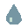
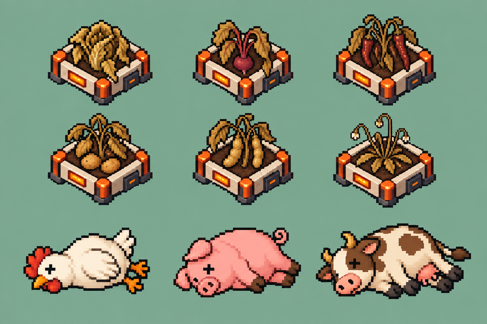
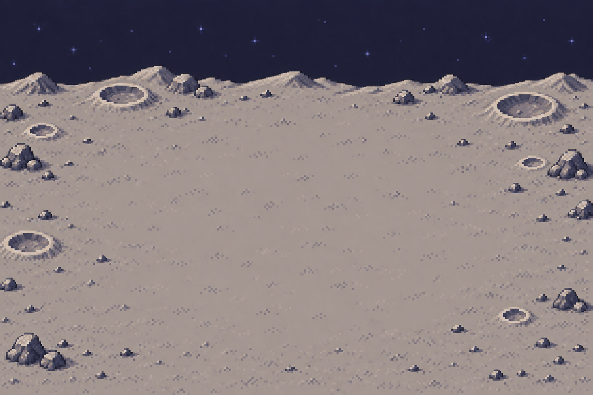
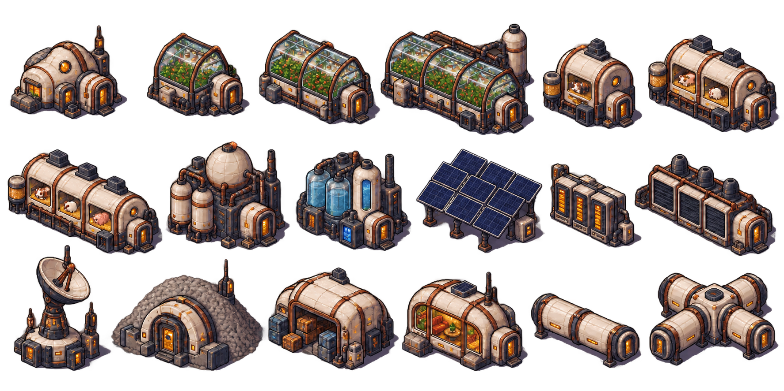
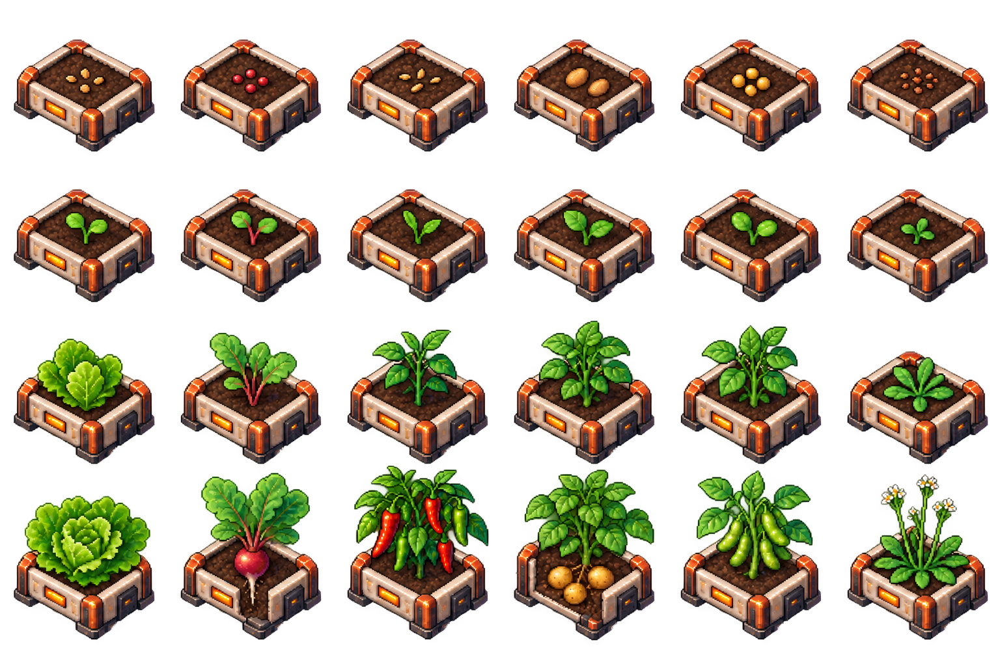
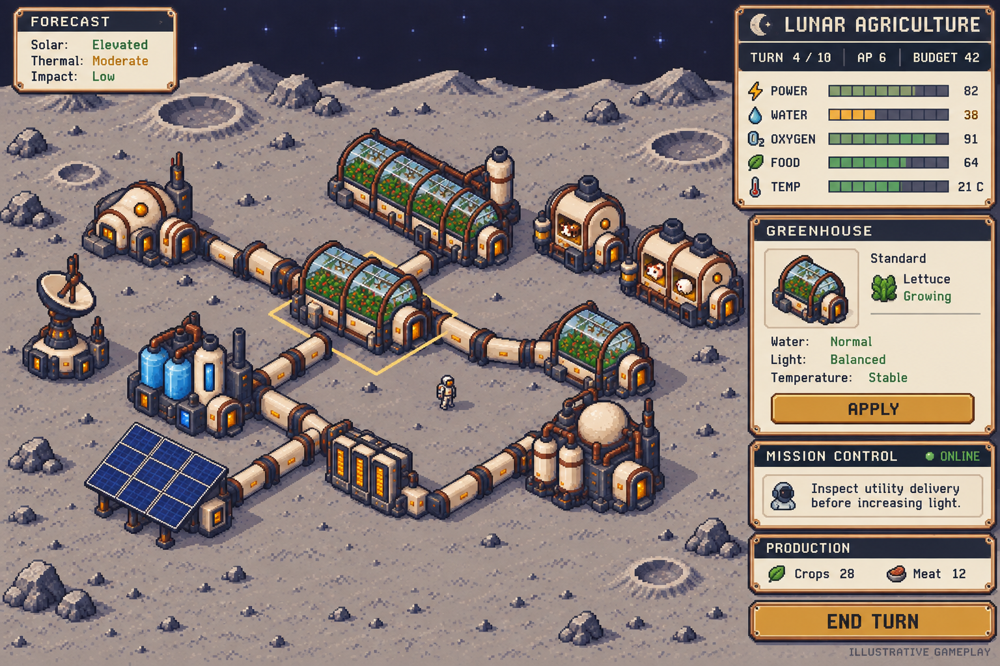
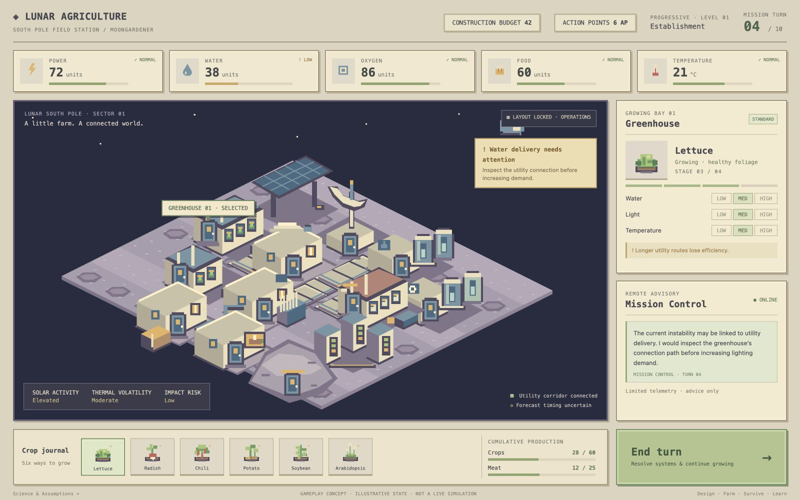

animals/chicken.svg
animals/chicken.svglegacy-fallback · 32 × 32
Preserved original placeholder/fallback
Original code-drawn SVG; public/assets/ASSETS.md animals/cow.svg
animals/cow.svglegacy-fallback · 32 × 32
Preserved original placeholder/fallback
Original code-drawn SVG; public/assets/ASSETS.md animals/pig.svg
animals/pig.svglegacy-fallback · 32 × 32
Preserved original placeholder/fallback
Original code-drawn SVG; public/assets/ASSETS.md cozy-v1/animals/chicken.svg
cozy-v1/animals/chicken.svgreact-placeholder · 32 × 32
Current React placeholder, retained until approved sprite integration
Original programmatic SVG; src/content/art/generate_assets.py cozy-v1/animals/cow.svg
cozy-v1/animals/cow.svgreact-placeholder · 32 × 32
Current React placeholder, retained until approved sprite integration
Original programmatic SVG; src/content/art/generate_assets.py cozy-v1/animals/pig.svg
cozy-v1/animals/pig.svgreact-placeholder · 32 × 32
Current React placeholder, retained until approved sprite integration
Original programmatic SVG; src/content/art/generate_assets.py cozy-v1/crops/arabidopsis-growing.svg
cozy-v1/crops/arabidopsis-growing.svgreact-placeholder · 32 × 32
Current React placeholder, retained until approved sprite integration
Original programmatic SVG; src/content/art/generate_assets.py cozy-v1/crops/arabidopsis-planted.svg
cozy-v1/crops/arabidopsis-planted.svgreact-placeholder · 32 × 32
Current React placeholder, retained until approved sprite integration
Original programmatic SVG; src/content/art/generate_assets.py cozy-v1/crops/arabidopsis-ready.svg
cozy-v1/crops/arabidopsis-ready.svgreact-placeholder · 32 × 32
Current React placeholder, retained until approved sprite integration
Original programmatic SVG; src/content/art/generate_assets.py cozy-v1/crops/arabidopsis-seedling.svg
cozy-v1/crops/arabidopsis-seedling.svgreact-placeholder · 32 × 32
Current React placeholder, retained until approved sprite integration
Original programmatic SVG; src/content/art/generate_assets.py cozy-v1/crops/chili-pepper-growing.svg
cozy-v1/crops/chili-pepper-growing.svgreact-placeholder · 32 × 32
Current React placeholder, retained until approved sprite integration
Original programmatic SVG; src/content/art/generate_assets.py cozy-v1/crops/chili-pepper-planted.svg
cozy-v1/crops/chili-pepper-planted.svgreact-placeholder · 32 × 32
Current React placeholder, retained until approved sprite integration
Original programmatic SVG; src/content/art/generate_assets.py cozy-v1/crops/chili-pepper-ready.svg
cozy-v1/crops/chili-pepper-ready.svgreact-placeholder · 32 × 32
Current React placeholder, retained until approved sprite integration
Original programmatic SVG; src/content/art/generate_assets.py cozy-v1/crops/chili-pepper-seedling.svg
cozy-v1/crops/chili-pepper-seedling.svgreact-placeholder · 32 × 32
Current React placeholder, retained until approved sprite integration
Original programmatic SVG; src/content/art/generate_assets.py cozy-v1/crops/lettuce-growing.svg
cozy-v1/crops/lettuce-growing.svgreact-placeholder · 32 × 32
Current React placeholder, retained until approved sprite integration
Original programmatic SVG; src/content/art/generate_assets.py cozy-v1/crops/lettuce-planted.svg
cozy-v1/crops/lettuce-planted.svgreact-placeholder · 32 × 32
Current React placeholder, retained until approved sprite integration
Original programmatic SVG; src/content/art/generate_assets.py cozy-v1/crops/lettuce-ready.svg
cozy-v1/crops/lettuce-ready.svgreact-placeholder · 32 × 32
Current React placeholder, retained until approved sprite integration
Original programmatic SVG; src/content/art/generate_assets.py cozy-v1/crops/lettuce-seedling.svg
cozy-v1/crops/lettuce-seedling.svgreact-placeholder · 32 × 32
Current React placeholder, retained until approved sprite integration
Original programmatic SVG; src/content/art/generate_assets.py cozy-v1/crops/potato-growing.svg
cozy-v1/crops/potato-growing.svgreact-placeholder · 32 × 32
Current React placeholder, retained until approved sprite integration
Original programmatic SVG; src/content/art/generate_assets.py cozy-v1/crops/potato-planted.svg
cozy-v1/crops/potato-planted.svgreact-placeholder · 32 × 32
Current React placeholder, retained until approved sprite integration
Original programmatic SVG; src/content/art/generate_assets.py cozy-v1/crops/potato-ready.svg
cozy-v1/crops/potato-ready.svgreact-placeholder · 32 × 32
Current React placeholder, retained until approved sprite integration
Original programmatic SVG; src/content/art/generate_assets.py cozy-v1/crops/potato-seedling.svg
cozy-v1/crops/potato-seedling.svgreact-placeholder · 32 × 32
Current React placeholder, retained until approved sprite integration
Original programmatic SVG; src/content/art/generate_assets.py cozy-v1/crops/radish-growing.svg
cozy-v1/crops/radish-growing.svgreact-placeholder · 32 × 32
Current React placeholder, retained until approved sprite integration
Original programmatic SVG; src/content/art/generate_assets.py cozy-v1/crops/radish-planted.svg
cozy-v1/crops/radish-planted.svgreact-placeholder · 32 × 32
Current React placeholder, retained until approved sprite integration
Original programmatic SVG; src/content/art/generate_assets.py cozy-v1/crops/radish-ready.svg
cozy-v1/crops/radish-ready.svgreact-placeholder · 32 × 32
Current React placeholder, retained until approved sprite integration
Original programmatic SVG; src/content/art/generate_assets.py cozy-v1/crops/radish-seedling.svg
cozy-v1/crops/radish-seedling.svgreact-placeholder · 32 × 32
Current React placeholder, retained until approved sprite integration
Original programmatic SVG; src/content/art/generate_assets.py cozy-v1/crops/soybean-growing.svg
cozy-v1/crops/soybean-growing.svgreact-placeholder · 32 × 32
Current React placeholder, retained until approved sprite integration
Original programmatic SVG; src/content/art/generate_assets.py cozy-v1/crops/soybean-planted.svg
cozy-v1/crops/soybean-planted.svgreact-placeholder · 32 × 32
Current React placeholder, retained until approved sprite integration
Original programmatic SVG; src/content/art/generate_assets.py cozy-v1/crops/soybean-ready.svg
cozy-v1/crops/soybean-ready.svgreact-placeholder · 32 × 32
Current React placeholder, retained until approved sprite integration
Original programmatic SVG; src/content/art/generate_assets.py cozy-v1/crops/soybean-seedling.svg
cozy-v1/crops/soybean-seedling.svgreact-placeholder · 32 × 32
Current React placeholder, retained until approved sprite integration
Original programmatic SVG; src/content/art/generate_assets.py cozy-v1/modules/battery.svg
cozy-v1/modules/battery.svgreact-placeholder · 96 × 96
Current React placeholder, retained until approved sprite integration
Original programmatic SVG; src/content/art/generate_assets.py cozy-v1/modules/communications.svg
cozy-v1/modules/communications.svgreact-placeholder · 96 × 96
Current React placeholder, retained until approved sprite integration
Original programmatic SVG; src/content/art/generate_assets.py cozy-v1/modules/corridor.svg
cozy-v1/modules/corridor.svgreact-placeholder · 96 × 96
Current React placeholder, retained until approved sprite integration
Original programmatic SVG; src/content/art/generate_assets.py cozy-v1/modules/greenhouse-compact.svg
cozy-v1/modules/greenhouse-compact.svgreact-placeholder · 96 × 96
Current React placeholder, retained until approved sprite integration
Original programmatic SVG; src/content/art/generate_assets.py cozy-v1/modules/greenhouse-industrial.svg
cozy-v1/modules/greenhouse-industrial.svgreact-placeholder · 96 × 96
Current React placeholder, retained until approved sprite integration
Original programmatic SVG; src/content/art/generate_assets.py cozy-v1/modules/greenhouse-standard.svg
cozy-v1/modules/greenhouse-standard.svgreact-placeholder · 96 × 96
Current React placeholder, retained until approved sprite integration
Original programmatic SVG; src/content/art/generate_assets.py cozy-v1/modules/greenhouse.svg
cozy-v1/modules/greenhouse.svgreact-placeholder · 96 × 96
Current React placeholder, retained until approved sprite integration
Original programmatic SVG; src/content/art/generate_assets.py cozy-v1/modules/habitat.svg
cozy-v1/modules/habitat.svgreact-placeholder · 96 × 96
Current React placeholder, retained until approved sprite integration
Original programmatic SVG; src/content/art/generate_assets.py cozy-v1/modules/livestock-compact.svg
cozy-v1/modules/livestock-compact.svgreact-placeholder · 96 × 96
Current React placeholder, retained until approved sprite integration
Original programmatic SVG; src/content/art/generate_assets.py cozy-v1/modules/livestock-industrial.svg
cozy-v1/modules/livestock-industrial.svgreact-placeholder · 96 × 96
Current React placeholder, retained until approved sprite integration
Original programmatic SVG; src/content/art/generate_assets.py cozy-v1/modules/livestock-standard.svg
cozy-v1/modules/livestock-standard.svgreact-placeholder · 96 × 96
Current React placeholder, retained until approved sprite integration
Original programmatic SVG; src/content/art/generate_assets.py cozy-v1/modules/livestock.svg
cozy-v1/modules/livestock.svgreact-placeholder · 96 × 96
Current React placeholder, retained until approved sprite integration
Original programmatic SVG; src/content/art/generate_assets.py cozy-v1/modules/oxygen.svg
cozy-v1/modules/oxygen.svgreact-placeholder · 96 × 96
Current React placeholder, retained until approved sprite integration
Original programmatic SVG; src/content/art/generate_assets.py cozy-v1/modules/recreation.svg
cozy-v1/modules/recreation.svgreact-placeholder · 96 × 96
Current React placeholder, retained until approved sprite integration
Original programmatic SVG; src/content/art/generate_assets.py cozy-v1/modules/shelter.svg
cozy-v1/modules/shelter.svgreact-placeholder · 96 × 96
Current React placeholder, retained until approved sprite integration
Original programmatic SVG; src/content/art/generate_assets.py cozy-v1/modules/solar.svg
cozy-v1/modules/solar.svgreact-placeholder · 96 × 96
Current React placeholder, retained until approved sprite integration
Original programmatic SVG; src/content/art/generate_assets.py cozy-v1/modules/storage.svg
cozy-v1/modules/storage.svgreact-placeholder · 96 × 96
Current React placeholder, retained until approved sprite integration
Original programmatic SVG; src/content/art/generate_assets.py cozy-v1/modules/utility.svg
cozy-v1/modules/utility.svgreact-placeholder · 96 × 96
Current React placeholder, retained until approved sprite integration
Original programmatic SVG; src/content/art/generate_assets.py cozy-v1/modules/water.svg
cozy-v1/modules/water.svgreact-placeholder · 96 × 96
Current React placeholder, retained until approved sprite integration
Original programmatic SVG; src/content/art/generate_assets.py cozy-v1/outpost-scene.svg
cozy-v1/outpost-scene.svgreact-placeholder · 768 × 500
Current React placeholder, retained until approved sprite integration
Original programmatic SVG; src/content/art/generate_assets.pycozy-v1/terrain/regolith-0.svgreact-placeholder · 64 × 36
Current React placeholder, retained until approved sprite integration
Original programmatic SVG; src/content/art/generate_assets.pycozy-v1/terrain/regolith-1.svgreact-placeholder · 64 × 36
Current React placeholder, retained until approved sprite integration
Original programmatic SVG; src/content/art/generate_assets.pycozy-v1/terrain/regolith-2.svgreact-placeholder · 64 × 36
Current React placeholder, retained until approved sprite integration
Original programmatic SVG; src/content/art/generate_assets.py cozy-v1/ui/communications.svg
cozy-v1/ui/communications.svgreact-placeholder · 32 × 32
Current React placeholder, retained until approved sprite integration
Original programmatic SVG; src/content/art/generate_assets.pycozy-v1/ui/damage.svgreact-placeholder · 32 × 32
Current React placeholder, retained until approved sprite integration
Original programmatic SVG; src/content/art/generate_assets.pycozy-v1/ui/food.svgreact-placeholder · 32 × 32
Current React placeholder, retained until approved sprite integration
Original programmatic SVG; src/content/art/generate_assets.py cozy-v1/ui/micrometeoroid.svg
cozy-v1/ui/micrometeoroid.svgreact-placeholder · 32 × 32
Current React placeholder, retained until approved sprite integration
Original programmatic SVG; src/content/art/generate_assets.pycozy-v1/ui/oxygen.svgreact-placeholder · 32 × 32
Current React placeholder, retained until approved sprite integration
Original programmatic SVG; src/content/art/generate_assets.py cozy-v1/ui/power.svg
cozy-v1/ui/power.svgreact-placeholder · 32 × 32
Current React placeholder, retained until approved sprite integration
Original programmatic SVG; src/content/art/generate_assets.py cozy-v1/ui/radiation.svg
cozy-v1/ui/radiation.svgreact-placeholder · 32 × 32
Current React placeholder, retained until approved sprite integration
Original programmatic SVG; src/content/art/generate_assets.py cozy-v1/ui/temperature.svg
cozy-v1/ui/temperature.svgreact-placeholder · 32 × 32
Current React placeholder, retained until approved sprite integration
Original programmatic SVG; src/content/art/generate_assets.py
cozy-v1/ui/water.svgreact-placeholder · 32 × 32
Current React placeholder, retained until approved sprite integration
Original programmatic SVG; src/content/art/generate_assets.py crops/lettuce.svg
crops/lettuce.svglegacy-fallback · 32 × 32
Preserved original placeholder/fallback
Original code-drawn SVG; public/assets/ASSETS.md crops/potato.svg
crops/potato.svglegacy-fallback · 32 × 32
Preserved original placeholder/fallback
Original code-drawn SVG; public/assets/ASSETS.md crops/wheat.svg
crops/wheat.svglegacy-fallback · 32 × 32
Preserved original placeholder/fallback
Original code-drawn SVG; public/assets/ASSETS.md modules/battery.svg
modules/battery.svglegacy-fallback · 32 × 32
Preserved original placeholder/fallback
Original code-drawn SVG; public/assets/ASSETS.md modules/communications.svg
modules/communications.svglegacy-fallback · 32 × 32
Preserved original placeholder/fallback
Original code-drawn SVG; public/assets/ASSETS.md modules/corridor.svg
modules/corridor.svglegacy-fallback · 32 × 32
Preserved original placeholder/fallback
Original code-drawn SVG; public/assets/ASSETS.md modules/greenhouse.svg
modules/greenhouse.svglegacy-fallback · 32 × 32
Preserved original placeholder/fallback
Original code-drawn SVG; public/assets/ASSETS.md modules/habitat.svg
modules/habitat.svglegacy-fallback · 32 × 32
Preserved original placeholder/fallback
Original code-drawn SVG; public/assets/ASSETS.md modules/livestock.svg
modules/livestock.svglegacy-fallback · 32 × 32
Preserved original placeholder/fallback
Original code-drawn SVG; public/assets/ASSETS.md modules/oxygen.svg
modules/oxygen.svglegacy-fallback · 32 × 32
Preserved original placeholder/fallback
Original code-drawn SVG; public/assets/ASSETS.md modules/recreation.svg
modules/recreation.svglegacy-fallback · 32 × 32
Preserved original placeholder/fallback
Original code-drawn SVG; public/assets/ASSETS.md modules/shelter.svg
modules/shelter.svglegacy-fallback · 32 × 32
Preserved original placeholder/fallback
Original code-drawn SVG; public/assets/ASSETS.md modules/solar.svg
modules/solar.svglegacy-fallback · 32 × 32
Preserved original placeholder/fallback
Original code-drawn SVG; public/assets/ASSETS.md modules/storage.svg
modules/storage.svglegacy-fallback · 32 × 32
Preserved original placeholder/fallback
Original code-drawn SVG; public/assets/ASSETS.md modules/utility.svg
modules/utility.svglegacy-fallback · 32 × 32
Preserved original placeholder/fallback
Original code-drawn SVG; public/assets/ASSETS.md modules/water.svg
modules/water.svglegacy-fallback · 32 × 32
Preserved original placeholder/fallback
Original code-drawn SVG; public/assets/ASSETS.md
pixel-v2/adult-failure-states.png★ 推荐 / pending-engine-preparation · 1536 × 1024
Art direction sheet; frame extraction, transparency and anchor validation required
Built-in image generation; src/content/art/*PROMPT*.md pixel-v2/animals-systems.png
pixel-v2/animals-systems.png★ 推荐 / pending-engine-preparation · 1448 × 1086
Art direction sheet; frame extraction, transparency and anchor validation required
Built-in image generation; src/content/art/*PROMPT*.md pixel-v2/buildings.png
pixel-v2/buildings.png★ 推荐 / pending-engine-preparation · 1774 × 887
Art direction sheet; frame extraction, transparency and anchor validation required
Built-in image generation; src/content/art/*PROMPT*.md pixel-v2/crops.png
pixel-v2/crops.png★ 推荐 / pending-engine-preparation · 1536 × 1024
Art direction sheet; frame extraction, transparency and anchor validation required
Built-in image generation; src/content/art/*PROMPT*.md pixel-v2/livestock-stages.png
pixel-v2/livestock-stages.png★ 推荐 / pending-engine-preparation · 1536 × 1024
Art direction sheet; frame extraction, transparency and anchor validation required
Built-in image generation; src/content/art/*PROMPT*.md
pixel-v2/lunar-background-v2.png★ 推荐 / pending-engine-preparation · 1536 × 1024
Baked lunar backdrop; not seamless, not a collision map
Built-in image generation; src/content/art/*PROMPT*.md pixel-v2/lunar-background.png
pixel-v2/lunar-background.pngarchived-art-study · 1536 × 1024
Baked lunar backdrop; not seamless, not a collision map
Built-in image generation; src/content/art/*PROMPT*.md
pixel-v2/reference-detail/buildings.pngarchived-art-study · 1774 × 887
Art direction sheet; frame extraction, transparency and anchor validation required
Built-in image generation; src/content/art/*PROMPT*.md
pixel-v2/reference-detail/crops.pngarchived-art-study · 1536 × 1024
Art direction sheet; frame extraction, transparency and anchor validation required
Built-in image generation; src/content/art/*PROMPT*.mdHTML PREVIEW
previews/gameplay-concept-v2.htmlarchived-preview · Responsive HTML
Presentation only; sample values, no live simulation
Built-in image generation
previews/gameplay-concept-v2.pngarchived-preview · 1536 × 1024
Presentation only; sample values, no live simulation
Built-in image generationHTML PREVIEW
previews/gameplay-concept-v3.html★ 推荐 / illustrative-preview · Responsive HTML
Presentation only; sample values, no live simulation
Built-in image generation previews/gameplay-concept-v3.png
previews/gameplay-concept-v3.png★ 推荐 / illustrative-preview · 1536 × 1024
Presentation only; sample values, no live simulation
Built-in image generationHTML PREVIEW
previews/gameplay-mock-v1.htmlarchived-preview · Responsive HTML
Presentation only; sample values, no live simulation
React/HTML presentation snapshot; gameplay-mock PNG is browser capture
previews/gameplay-mock-v1.pngarchived-preview · 65536 × 4.29254e+09
Presentation only; sample values, no live simulation
React/HTML presentation snapshot; gameplay-mock PNG is browser captureHTML PREVIEW
previews/original-landing.htmlarchived-preview · Responsive HTML
Presentation only; sample values, no live simulation
React/HTML presentation snapshot; gameplay-mock PNG is browser captureHTML PREVIEW
previews/pixel-elements-v1.htmlarchived-preview · Responsive HTML
Presentation only; sample values, no live simulation
React/HTML presentation snapshot; gameplay-mock PNG is browser captureHTML PREVIEW
previews/pixel-elements-v2.htmlarchived-preview · Responsive HTML
Presentation only; sample values, no live simulation
React/HTML presentation snapshot; gameplay-mock PNG is browser captureHTML PREVIEW
previews/pixel-elements-v3.htmlarchived-preview · Responsive HTML
Presentation only; sample values, no live simulation
React/HTML presentation snapshot; gameplay-mock PNG is browser captureHTML PREVIEW
previews/pixel-elements-v4.htmlarchived-preview · Responsive HTML
Presentation only; sample values, no live simulation
React/HTML presentation snapshot; gameplay-mock PNG is browser captureHTML PREVIEW
previews/pixel-elements-v5.html★ 推荐 / illustrative-preview · Responsive HTML
Presentation only; sample values, no live simulation
React/HTML presentation snapshot; gameplay-mock PNG is browser captureHTML PREVIEW
previews/ui-v1.htmlarchived-preview · Responsive HTML
Presentation only; sample values, no live simulation
React/HTML presentation snapshot; gameplay-mock PNG is browser captureHTML PREVIEW
previews/ui-v2.htmlarchived-preview · Responsive HTML
Presentation only; sample values, no live simulation
React/HTML presentation snapshot; gameplay-mock PNG is browser captureHTML PREVIEW
previews/ui-v3.htmlarchived-preview · Responsive HTML
Presentation only; sample values, no live simulation
React/HTML presentation snapshot; gameplay-mock PNG is browser captureHTML PREVIEW
previews/ui-v4.htmlarchived-preview · Responsive HTML
Presentation only; sample values, no live simulation
React/HTML presentation snapshot; gameplay-mock PNG is browser captureHTML PREVIEW
previews/ui-v5.htmlarchived-preview · Responsive HTML
Presentation only; sample values, no live simulation
React/HTML presentation snapshot; gameplay-mock PNG is browser captureHTML PREVIEW
previews/ui-v6.html★ 推荐 / illustrative-preview · Responsive HTML
Presentation only; sample values, no live simulation
React/HTML presentation snapshot; gameplay-mock PNG is browser capture ui/communications.svg
ui/communications.svglegacy-fallback · 32 × 32
Preserved original placeholder/fallback
Original code-drawn SVG; public/assets/ASSETS.md ui/micrometeoroid.svg
ui/micrometeoroid.svglegacy-fallback · 32 × 32
Preserved original placeholder/fallback
Original code-drawn SVG; public/assets/ASSETS.md ui/power.svg
ui/power.svglegacy-fallback · 32 × 32
Preserved original placeholder/fallback
Original code-drawn SVG; public/assets/ASSETS.md ui/radiation.svg
ui/radiation.svglegacy-fallback · 32 × 32
Preserved original placeholder/fallback
Original code-drawn SVG; public/assets/ASSETS.md ui/temperature.svg
ui/temperature.svglegacy-fallback · 32 × 32
Preserved original placeholder/fallback
Original code-drawn SVG; public/assets/ASSETS.md